Diseñamos y construimos soleras de hormigón sin juntas, reforzadas con fibra de acero y de alta planimetría, para el sector industrial y logístico. También revestimientos continuos y restauración de pavimentos existentes.
Solera pulida · nave industrialFratasado · solera en ejecuciónResina continua · pasillo técnicoHormigón pulido · almacén en altura01/04
Experiencia
+30años
Avalados por el grupo pionero y referente europeo en pavimentos sin juntas y alta planimetría.
Medios propios
Laser screed y fratasadoras
Equipos específicamente diseñados para la ejecución de soleras de alta planimetría.
Presencia
España, Centroeuropa, Sudamérica y Oriente Medio
Proyectos de pavimentación industrial y comercial.
Gestión ambiental
ISO 14001
Certificación UNE-EN ISO 14001:2015 (sello ICDQ, en Calidad).
01Índice de servicios
Cuatro líneas de servicio y responsabilidad integral sobre su pavimento.
Estamos presentes en todos los programas de un pavimento: diseño, planificación y construcción de pavimentos de hormigón para el sector industrial y logístico, diseño y aplicación de revestimientos para uso industrial y comercial, y tratamiento de patologías de pavimentos.
Pavimentos decorativos continuos de resinas, cementosos u hormigón, para interior y exterior.
Espacios públicos, comerciales, corporativos o privados.
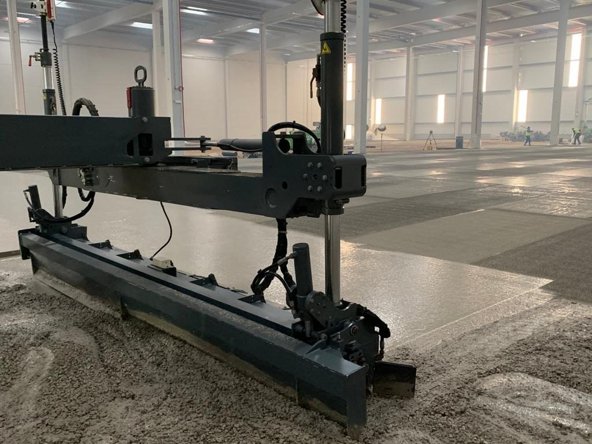
S-01 · Laser screed sobre hormigón fresco
S-01 · HormigónLínea principal
Pavimentos de hormigón sin juntas y alta tolerancia
Diseño y ejecución de soleras de hormigón con prestaciones especiales. Especialistas en alta planimetría y en pavimentos sin juntas reforzados con fibra de acero.
Servicio integral: diseño, planificación y elección de materiales con un equipo de técnicos experimentados.
Diseño y aplicación de revestimientos finales para uso industrial y comercial.
Morteros de resinas sintéticas y cementosos
Sistemas autonivelantes
Revestimientos flexibles
Sistemas conductivos
Revestimientos multicapa
Pavimentos de poliuretano cemento
Morteros reforzados con fibras para altas solicitaciones
Revestimientos de pintura con resinas
S-02.1 · Sublínea
Impermeabilizaciones poliméricas
Resinas acrílicas, poliuretano y poliureas, en aplicación en frío o proyección en caliente. Membrana continua adherida al soporte.
Cubiertas metálicas y superficies cementosas
Cubiertas transitables y tráfico rodado
Cubiertas invertidas
Cubiertas y terrazas con acabado cerámico
Cubetos, balsas y aljibes
Estructuras de obra civil
Depósitos metálicos y de hormigón
Tuberías
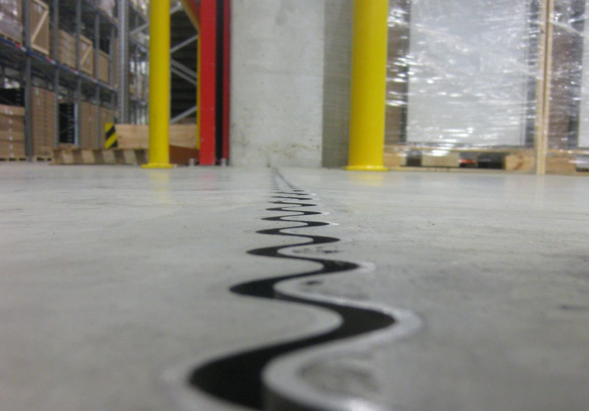
S-03 · Junta reparada
S-03 · RestauraciónSistema Twin Cure
Restauración de soleras
Una solución definitiva a un problema recurrente.
Restauración de soleras manteniendo la operatividad de su empresa. Restauración de planimetrías y nivelación con morteros autonivelantes predosificados de altas prestaciones mecánicas (base cementosa, rápido fraguado) y resinas sintéticas para corregir planimetrías o superficies deterioradas.
Restauración de planimetrías y nivelación
Tratamiento de juntas
Tratamiento de fisuras
Tratamiento de desgaste
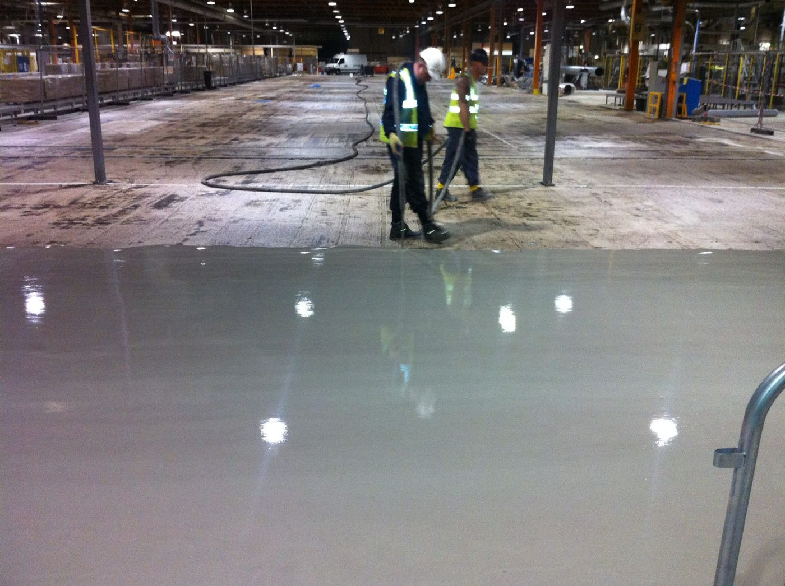
S-03 · Pulido de una solera existente
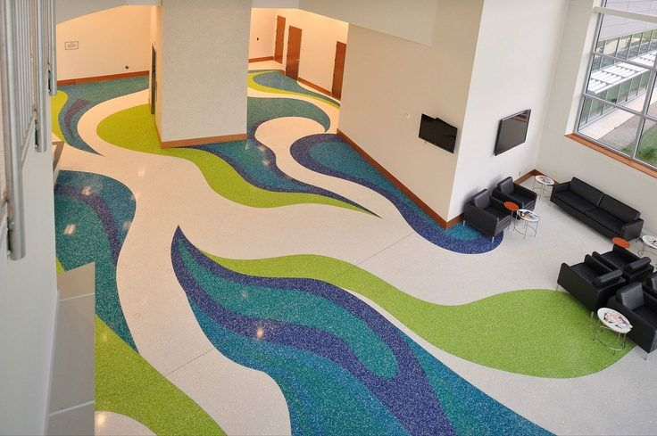
S-04 · Terrazo continuo in situ
S-04 · Artísticos
Pavimentos continuos artísticos
«Si los pavimentos industriales son nuestro fuerte, los pavimentos decorativos son nuestra pasión.»
Un sello único para enriquecer espacios públicos, comerciales, corporativos o privados.
Terrazo continuo in situ de resinas. Exclusivo y artesanal, ideal para espacios de alta concurrencia, hostelería, tiendas o viviendas: belleza, resistencia y bajo mantenimiento.
Pavimentos en formato grafiti o arte urbano. Morteros cementosos, resinas epoxi o poliuretano con materiales del grafiti.
Pavimentos continuos de hormigón. Acabado sobrio, con estilo, para interior y exterior.
02Sistemas propios
Cuatro sistemas Twinsol para soleras de hormigón.
Sistemas propios de la línea S-01, pavimentos de hormigón sin juntas y alta tolerancia.
Sistema
Descripción
Orientación
JOINT-FREE
TWINSOL JOINT-FREESolera de hormigón sin juntas reforzada con fibra de acero.
Pavimentos sin juntas para el sector industrial y logístico.
PLAN
TWINSOL PLANSolera de alta planimetría.
Soleras con exigencia de alta planimetría.
PLAN-XT
TWINSOL PLAN-XTSolera de muy alta planimetría.
Pasillos estrechos y estanterías de gran altura.
JUNTAS
Juntas de dilataciónDiseño y ejecución de juntas.
Se definen en el proyecto de cada obra.
Las prestaciones concretas de cada sistema (tolerancias, espesores, dosificación de fibra) se definen en el proyecto de cada obra.
Pasillo entre estanterías de gran altura
03Proceso de obra
Diseño, planificación y ejecución con medios propios.
Nuestros servicios engloban el diseño, la planificación y la implantación de soluciones específicas para cada caso, asumiendo la responsabilidad integral.
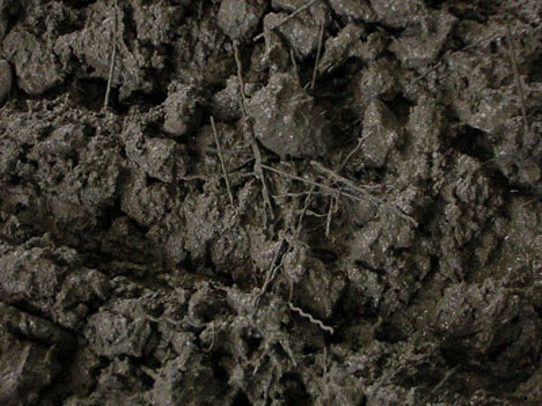
01 / 04
Diseño
Diseño, planificación y elección de materiales, con técnicos experimentados.
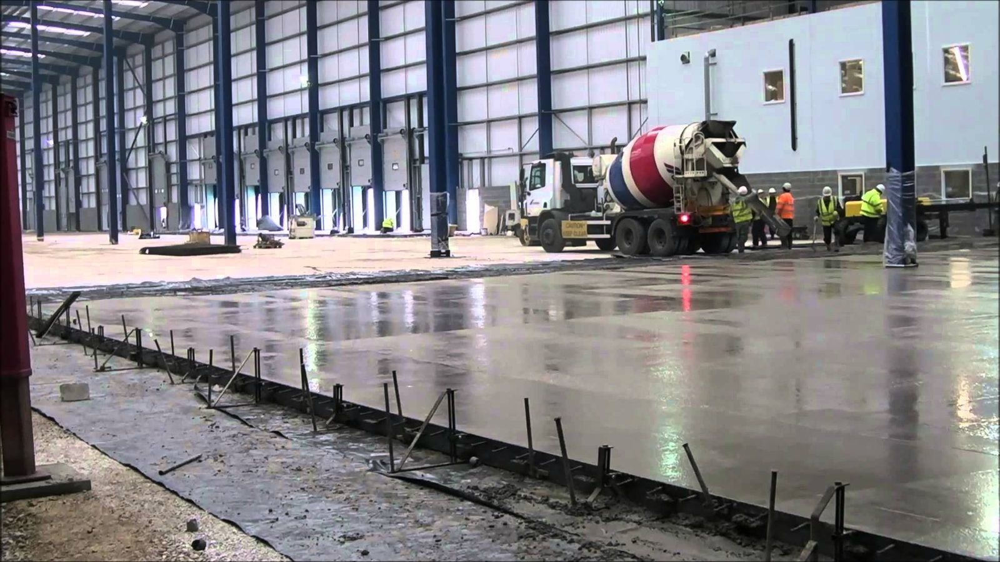
02 / 04
Vertido
Vertido del hormigón reforzado con fibra de acero en la nave.
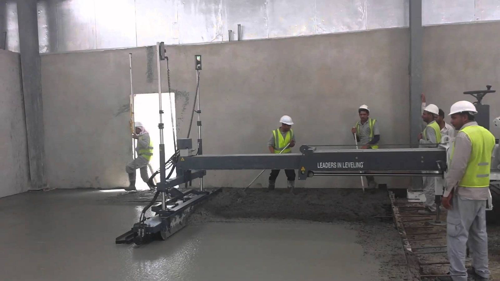
03 / 04
Extendido
Extendido y nivelación del hormigón con laser screed, equipo específicamente diseñado para soleras de alta planimetría.
Medios propios
04 / 04
Acabado
Fratasado mecánico de la superficie con fratasadoras propias.
04Sectores
Industria y logística. Y la línea artística, para espacios públicos y comerciales.
Pavimentación industrial y comercial, con un producto personalizado y adaptado a cada necesidad.
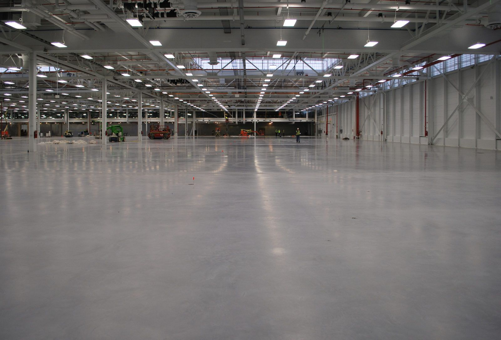
Solera de hormigón · nave logística
Industrial y comercial
Logística
Automoción y talleres
Agroalimentaria y envasadora
Hospitalaria y laboratorios
Química
Energética
Industria pesada
Minería
Edificación
Línea artística
Espacios públicos
Hostelería y tiendas
Espacios corporativos
Viviendas
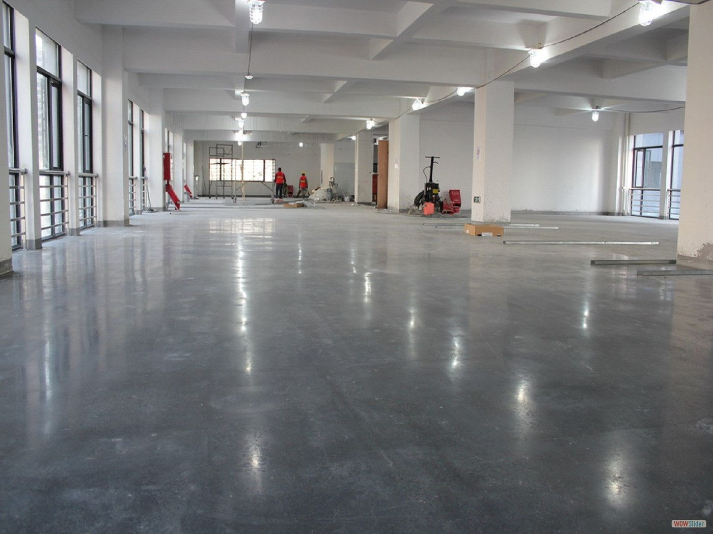
Una superficie continua
«El pavimento es la base, la parte esencial, sobre la que se desarrolla la actividad de cualquier empresa. Por eso, la calidad nunca es una opción.»
TWINSOL DECOR
Solera reflectante · nave con ventanales
05Obras ejecutadas
Obras ejecutadas, por tipo de pavimento.
Selección de fotografías de obra. Cada pie indica el tipo de pavimento, el tipo de espacio y, cuando procede, la línea de servicio del catálogo a la que corresponde.
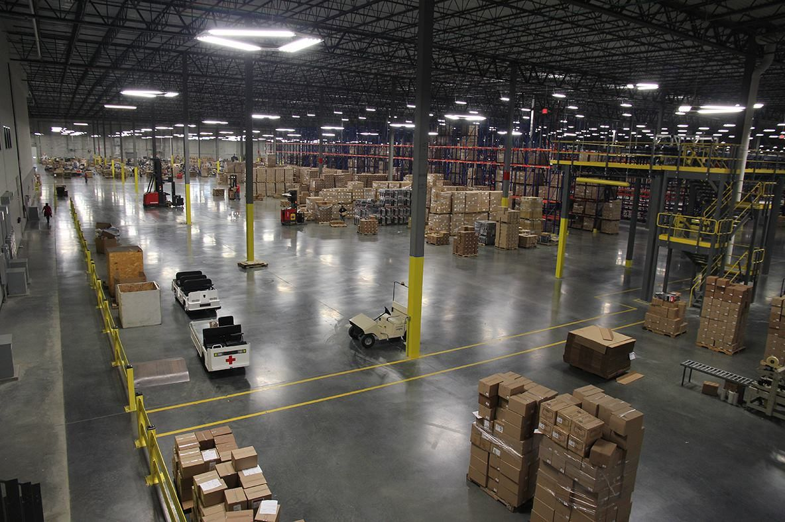
S-01Solera de hormigónCentro logístico en actividad
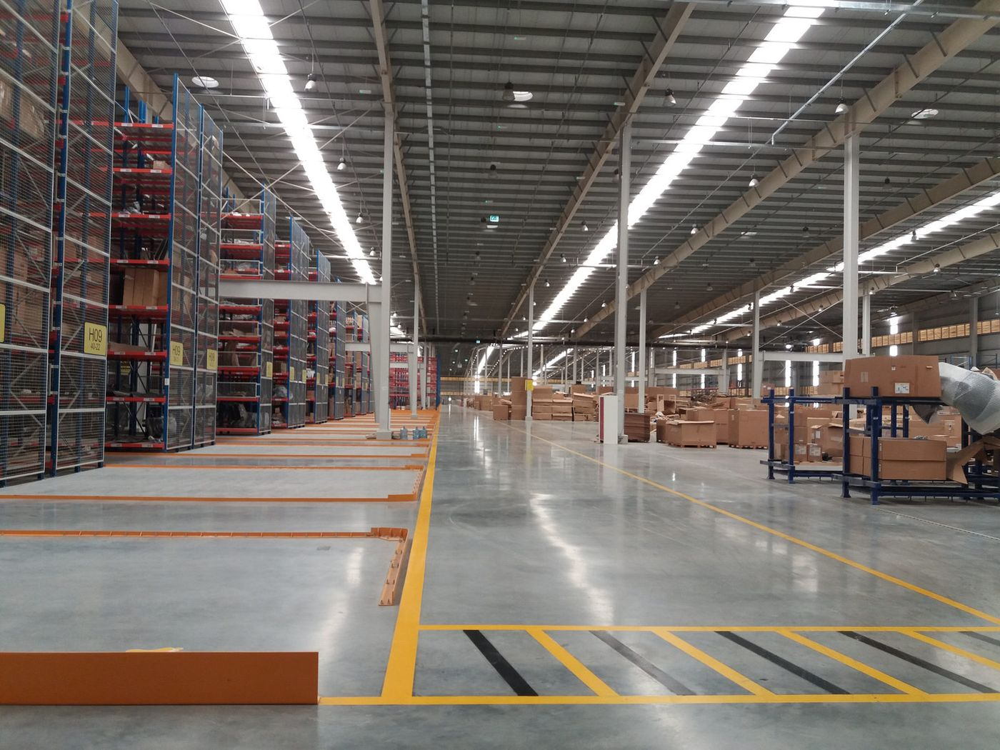
S-01Solera con señalizaciónAlmacén con estanterías
Especialistas en construcción y tratamiento de pavimentos continuos.
TWINSOL DECOR es una compañía especializada en construcción y tratamiento de pavimentos continuos, con vocación de servicio en tres áreas complementarias: pavimentos de hormigón de alta planimetría y convencionales, aplicación de revestimientos continuos y rehabilitación de pavimentos existentes.
Contamos con más de 30 años de experiencia avalados por el grupo pionero y referente europeo en la producción de pavimentos sin juntas y alta planimetría, con resultados reconocidos en el ámbito nacional e internacional. Nuestro equipo asiste a proyectos de pavimentación industrial y comercial en España, Centroeuropa, Sudamérica y Oriente Medio.
Construimos pavimentos de calidad, optimizando sus prestaciones y minimizando los costes de mantenimiento a través de la innovación en el diseño, la mejora continua de procesos y equipos específicamente diseñados, entregando un producto personalizado y adaptado a cada necesidad.
Identificamos las prioridades de cada encargo y asumimos la responsabilidad integral, centrando nuestros esfuerzos en proporcionar la máxima calidad y operatividad de sus pavimentos.
Valores
Integridad · Experiencia · Excelencia · Innovación · Trabajo en equipo
Salud y seguridadCompromiso con la salud y la seguridad de las personas en obra.
Medio ambientePreocupación por el medio ambiente, con gestión ambiental certificada.
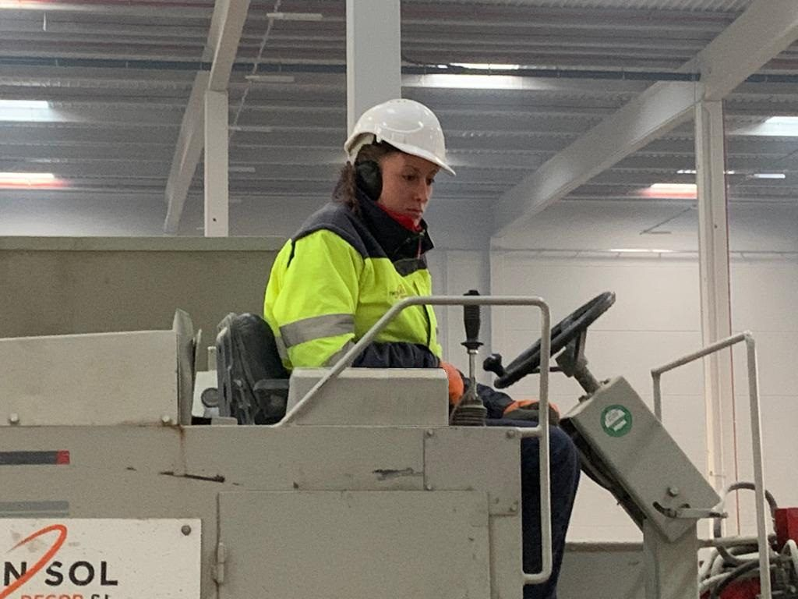
Operaria al mando de la maquinaria de obra
07Calidad y seguridad
Calidad, medio ambiente y seguridad laboral.
07.1
Política de calidad
Sistema de dirección de calidad interno orientado a la mejora continua, con revisión anual.
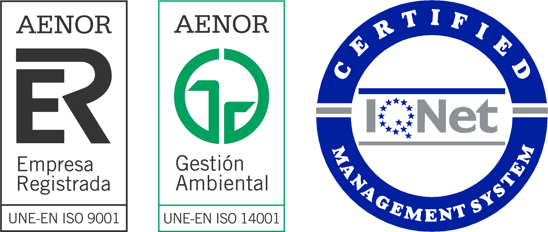
AENOR Empresa Registrada (ISO 9001) · AENOR Gestión Ambiental (ISO 14001) · IQNet
07.2
Responsabilidad medioambiental
Certificación de gestión ambiental según la norma UNE-EN ISO 14001:2015.
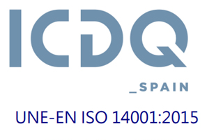
ICDQ · UNE-EN ISO 14001:2015
07.3
Seguridad laboral
Política de seguridad laboral con revisión anual.
Cumplimiento legal
EPI homologados
Maquinaria con sello CE
Formación del personal
Revisión anual de la política
08Contacto
Solicite presupuesto para su pavimento.
Indíquenos el tipo de instalación, la superficie aproximada y el uso previsto.
Oficina central
Dirección
Calle Alcolea nº 39 19174 Torrejón del Rey Guadalajara, España